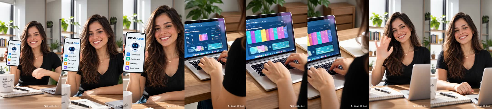

One reference image became a Short with Kling scenes, an ElevenLabs voice, lipsync and publishing, without anyone opening a video editor.
This project tells how an AI agent (Claude Code) produced a 15-second promo video for INEMA.CLUB in UGC style, the "real person talking to the camera" kind of video you see on social media. It is for content creators who want to hand production off to an agent. It shows the idea, the steps with the commands used, the tips that made a difference and the problems that came up along the way. To repeat it, you need a Kling AI subscription, an ElevenLabs account, ffmpeg, Python and a browser logged in to Kling.
The request was one sentence: "I want a 15-second promo video for INEMA, use Kling to show what we have on inema.club using this image as a reference, and then an ElevenLabs voice in Portuguese". The agent planned it, showed the cost, waited for the go-ahead and produced it.
The video came out of the Kling Pro subscription, through the official CLI. Cost: 120 credits for the scenes and 10 for the lipsync, out of a balance of 7,936.
Kling's Lip Sync only exists on the website. The agent opened an already logged-in browser, uploaded the scenes and downloaded the result on its own.
Every stage was checked: voice transcription, a contact sheet of the video, frame 0 with the hook, and an exact 15 s duration.
• 9:16 format, after asking (Reels and Shorts).
• Ask Kling for scenes without text, because it distorts letters, and lay the text on top, sharp.
• A short script, with the payoff in the first sentence: "Learn artificial intelligence hands-on, for free".
• A Brazilian female voice from the ElevenLabs catalog (Amanda Kelly).
• A local music track, with no third-party copyright.
What needed a go-ahead: spending credits, using the ElevenLabs API and publishing on YouTube.
Eight stages. Only the first one and the publishing one needed a person: to state the format and give the go-ahead.
kling omni_ref_video with the image as reference: 15 s, 9:16, 1080p, no audio, three shots. One call.
ElevenLabs eleven_multilingual_v2, speed 1.12, 13.3 s. Checked with local Whisper.
Python + Pillow draw 450 PNG frames, each text coming in on the spoken word.
Front-facing scenes go through the website's Lip Sync; ffmpeg puts it all together, removes the watermark and levels the sound.
The main one: use your subscription and give the agent the ability to operate the website when the tool has no CLI.
Kling has an official CLI (kling) that uses your plan's credits. No API key, no separate billing. The agent runs kling account before and after to measure the real cost.
Lip Sync, avatar and other features only exist on the website. A Chromium with your login, opened with --remote-debugging-port, lets the agent upload files and click through Playwright.
Video generators distort letters. Ask for "no text, no letters, no logos" and write the text afterwards, on top.
With image_to_video the video inherits the image format (1:1). For 9:16 from a square image, use omni_ref_video with --aspect_ratio 9:16.
15 s holds about 30 words. Trim the text and use the voice's native speed (1.1 to 1.15) instead of speeding up the audio afterwards.
A 5.08 s scene costs 10 credits; trimmed to 5.0 s, it costs 5.
The first frame already shows the promise ("Learn AI hands-on", "Free access"). People scrolling the feed decide right there.
Save what each submission returns (the generationId) to a file before moving on. Paid work that gets lost does not come back.
All of this really happened in this production. Each line gives the problem and the smallest fix that solved it.
crop=1012:1800:34:0).mp3_44100_192 is Creator plan only. Fix: mp3_44100_128.Everything runs on your machine. The agent used was Claude Code, but the scripts are ordinary and work by hand.
A paid plan and the official CLI, logged in.
npm i -g @klingai/cli-global kling login kling account
An account with an API key for the narration.
export ELEVENLABS_API_KEY=...Chromium with your Kling login and a debugging port; Playwright only as a library.
chromium --user-data-dir=~/perfil-kling \ --remote-debugging-port=9333 npm i playwright
Editing, cuts and the text layer.
sudo apt install ffmpeg pip install pillow
Black and ExtraBold in ~/.local/share/fonts/ (used by overlay.py).
A track of your own or a free one, in WAV. The promo used a track generated locally.
The commands below are the ones that ran for the INEMA promo. Swap the image, the text and the voice for your own.
Image as reference, three shots, no text. Keep the response: it contains the generationId.
kling omni_ref_video --model kling-video-v3_0_omni --image ./ref.png \ --duration 15 --aspect_ratio 9:16 --resolution 1080p \ --prefer_multi_shots true --enable_audio false \ "A warm 15-second commercial in three shots, featuring the young woman from <<<image_1>>>. Shot 1: she smiles and points at a smartphone. Shot 2: over-the-shoulder, she types on a laptop with abstract dashboards. Shot 3: she laughs and waves. No text, no letters, no logos." > submit.json kling query_tasks <generationId> # repeat until COMPLETED; download works[].url right away (expires in 24 h)
About 30 words, with the payoff in the first sentence. Check the duration and the pronunciation.
python3 scripts/tts_elevenlabs.py oi8rgjIfLgJRsQ6rbZh3 vo.mp3 \ "Aprenda inteligência artificial na prática, de graça! No Inema Clube tem cursos de IA, agentes, automação e comunidade. Mais conhecimento, mais liberdade. Acesse: inema ponto clube." 1.12 ffprobe -v error -show_entries format=duration -of csv=p=0 vo.mp3 # 13.27
The shot change times become C1 and C2 in the editing script.
ffmpeg -i kling.mp4 -vf "select='gt(scene,0.25)',showinfo" -f null - 2>&1 | grep -o "pts_time:[0-9.]*" # pts_time:4.625 pts_time:9.91667
montar.sh cuts the front-facing scenes and the speech segment for each one. With the logged-in browser open on port 9333, the scripts upload and download.
C1=4.625 C2=9.917 bash scripts/montar.sh # 1st run: generates ls/v91, v93, a91, a93 node scripts/kling_lipsync_enviar.mjs $PWD/ls 91:5 93:5 # checks the cost on the button before clicking node scripts/kling_lipsync_baixar.mjs $PWD/ls 91 93 # 3 to 5 min later: ls/ks91.mp4, ls/ks93.mp4
When run again, the script swaps the scenes for the lipsync versions, draws the text and mixes voice and music at −14 LUFS.
C1=4.625 C2=9.917 bash scripts/montar.sh # → promo-9x16.mp4, 15.000000 s
A contact sheet shows whether the hook is on frame 0 and whether the text appears.
mkdir -p cs; i=0; for t in 0 1.5 4.8 7.4 9 11.5 14.5; do i=$((i+1)) ffmpeg -v error -y -ss $t -i promo-9x16.mp4 -frames:v 1 -vf scale=270:-1 cs/f$i.jpg; done ffmpeg -y -i cs/f%d.jpg -vf tile=7x1 folha.jpg
At INEMA the Short went to the INEMA FTD channel via yt-pubx, which writes the title and description; Shorts get no thumbnail.
./yt-pubx publicar promo-9x16.mp4 --canal lives3 --sem-thumb --contexto "..." --dry-run
./yt-pubx publicar promo-9x16.mp4 --canal lives3 --sem-thumb --plano <pasta>/plano.json
Two versions of the same promo: the first with a voiceover and the second with the woman speaking in scenes 1 and 3.

Ideas left out of this first production.